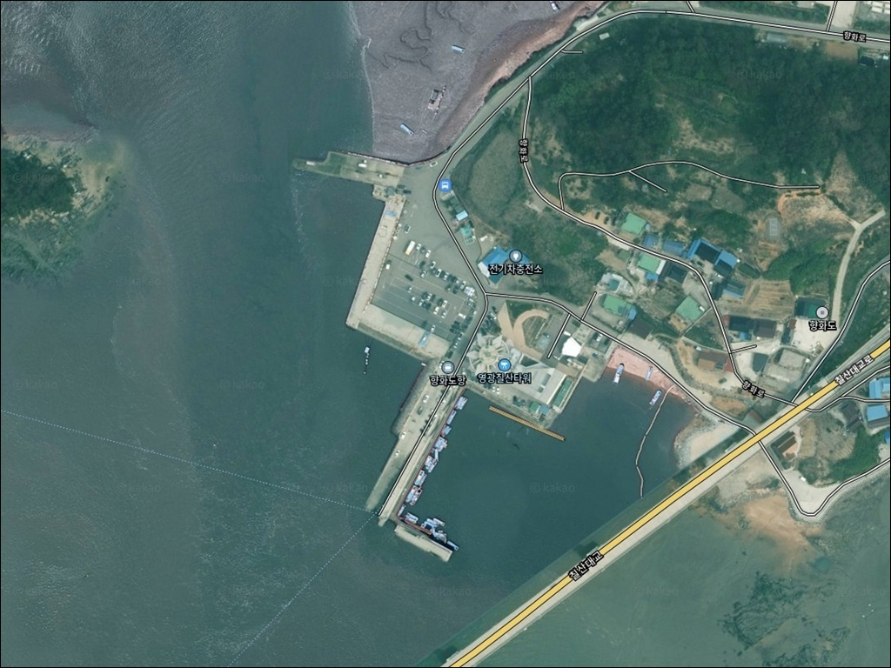
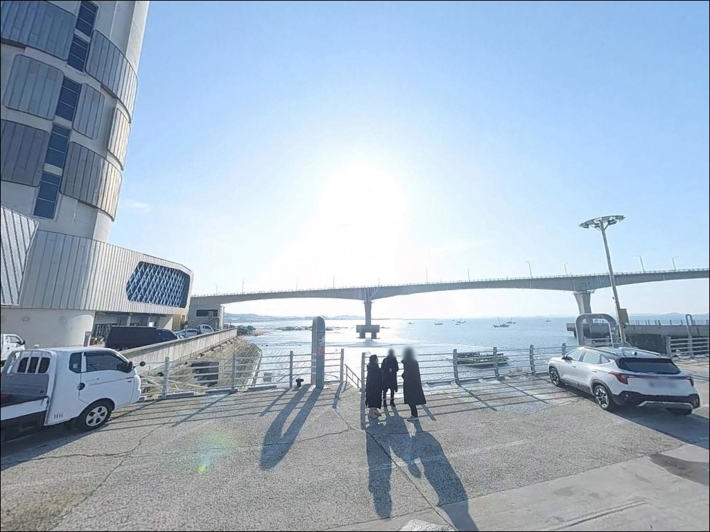
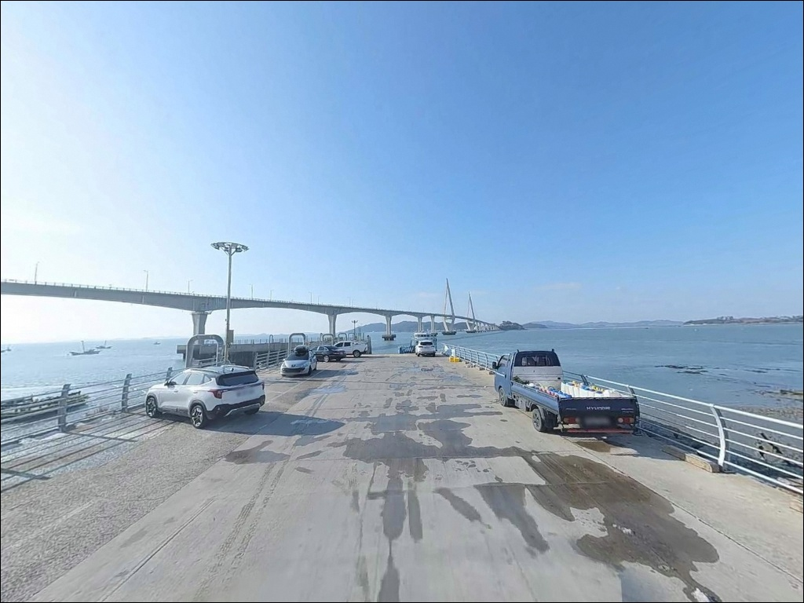
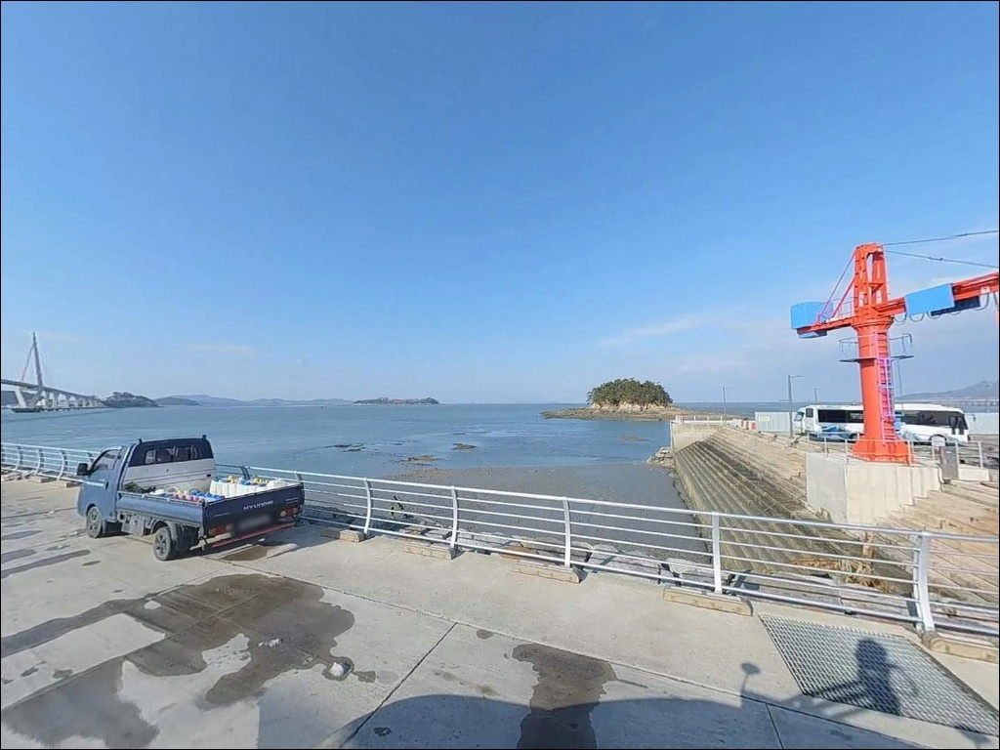
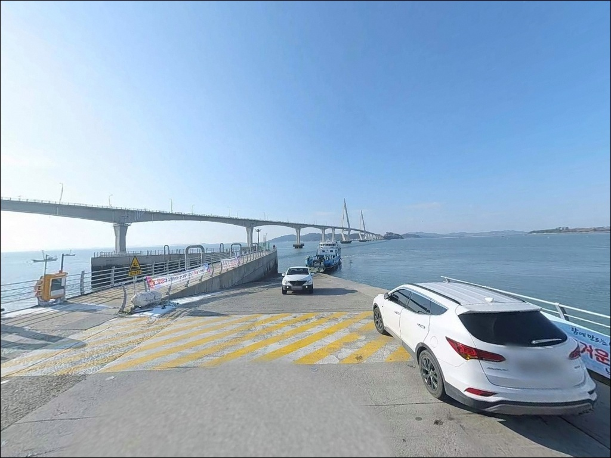
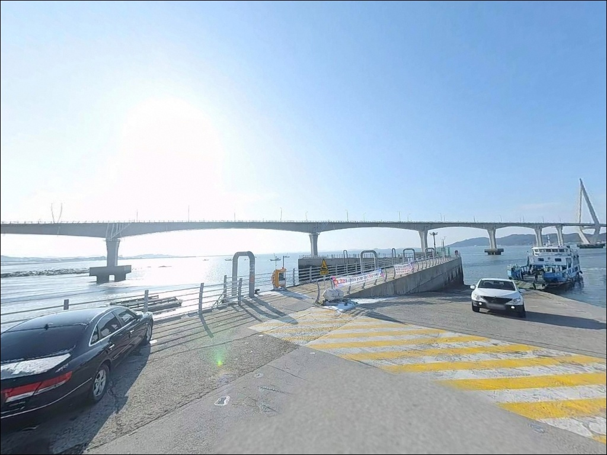
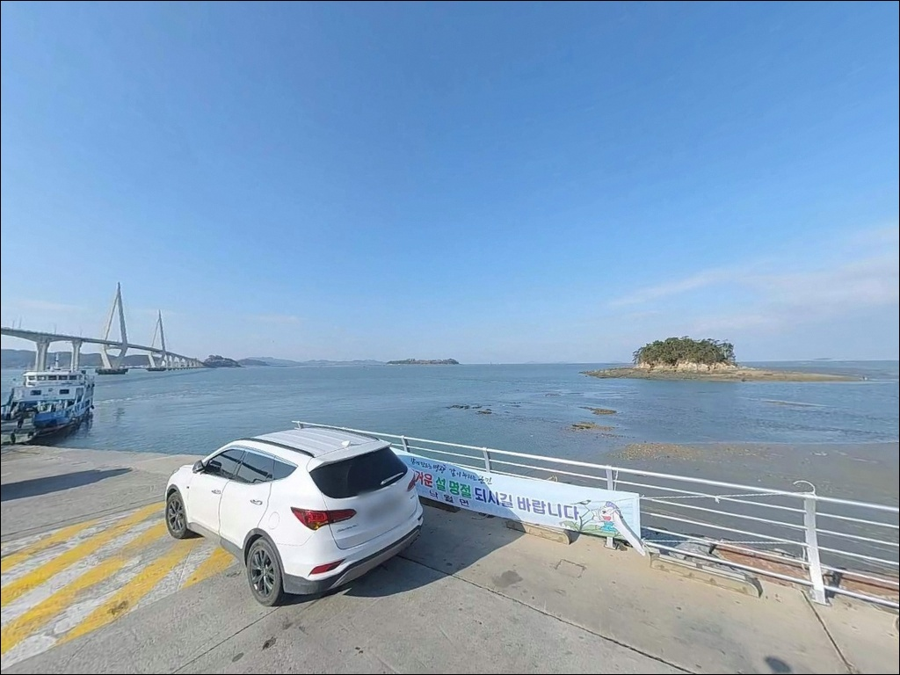
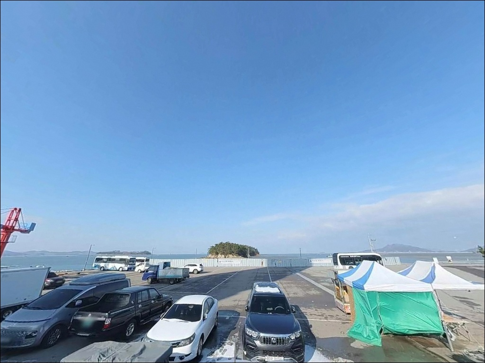
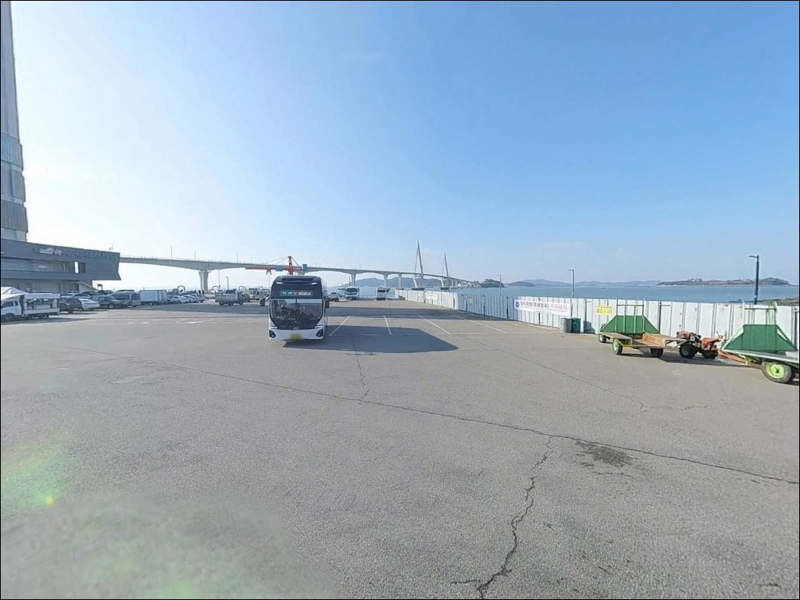

향화도항, 전남 영광군 바다와 가장 가까이 머무는 차박, 낚시 해안 명소
이 페이지에는 광고(제휴 링크 포함)가 있으며, 광고 링크를 통해 구매하면 운영자가 판매 수익 또는 수수료를 받을 수 있습니다. 포인트 사진: 카카오맵 스카이뷰·로드뷰. 이 페이지의 지도·사진 이미지는 카카오맵의 실제 서비스 이미지와 다를 수 있습니다.


포인트 안내
향화도항
전남 영광군 염산면 옥실리 1106-40
물때 확인 없이 사리 전후 향화도항에 도착하면
칠산바다 조류가 너무 강해
어떤 채비를 써도 바닥을 제대로 잡기 어렵습니다.
향화도는 과거 섬이었던 지형이 간척으로 육지와 연결되면서
주변 수로에 조류가 집중되는 구조가 형성된 포인트로,
들물과 날물의 타이밍이 낚시 효율을 결정하는
곳입니다.
전남 영광군 염산면에 위치한 향화도항은
국가어항으로 지정된 규모 있는 항구입니다.
칠산대교를 통해 무안 도리포 방향과 연결되며,
항구 바로 앞에 칠산타워 전망대가 자리한
낚시와 관광이 혼재하는 독특한 환경을 가지고 있습니다.
붕장어 야간 원투낚시와 갑오징어 에깅이
알려진 서해 서부권의 방파제·선착장 복합 포인트입니다.
이 글은
향화도항의 진입 동선과 물때 판단 기준,
낚시 여건과 차박 체류 조건에 집중합니다.
조황 단정이나 특정 어종 보장은
이 글의 범위에 포함되지 않습니다.

1. 진입 동선과 포인트 접근성
서해안고속도로 영광 나들목에서 나와
향화도교차로를 거쳐 향화로를 따라 진입하는 경로가
대표적인 접근 방식입니다.
교차로에서 선착장까지 약 870m 정도의
진입 종점형 구조로,
포장도로가 항까지 바로 이어져
비포장 구간이나 험로 구간은 없습니다.
칠산타워가 선착장 바로 앞에 위치한 관광지라
관광 목적으로 조성된 진입로 수준을 갖추고 있습니다.
도로 폭도 일정 수준 이상이고
칠산타워 인근 공용 주차장이 넓어
대형 SUV나 캠핑 장비를 실은 차량도
회차에 큰 어려움이 없는 구조입니다.
낚시객과 관광객, 여객선 이용객이 함께 몰리는
환경이므로 주말 오전에는
칠산타워 주차장 혼잡이 있을 수 있습니다.
이른 아침이나 평일에 도착한다면
선착장 인근 물양장 주변에도
차량을 세울 수 있는 공간이 있습니다.

2. 차박 환경과 야간 체류 여건
칠산타워의 경관 조명과 대교 구조물 불빛 덕분에
야간에도 주변 시야가 어느 정도 확보됩니다.
선착장 구역은 가로등이 없는 구간도 있으므로
개인 조명 장비는 기본으로 챙겨야 합니다.
낚시를 마치고 차 안에서 하룻밤 보내는 용도로는
나쁘지 않은 환경입니다.
다만 칠산타워를 찾는 관광객과
낚시를 즐기러 온 낚시인이 함께 모이는 공간이라
완전히 조용한 노지 차박 분위기를 기대하기는 어렵습니다.
외해 방향으로 어느 정도 노출된 구조라
서풍이 강하게 부는 날에는
바람 세기와 파도 소음을 미리 확인하는 편이 좋습니다.


3. 주변 편의시설 및 인프라 현황
칠산타워 내에 매점과 수산물 판매소가 있습니다.
운영시간 제약이 있으므로
이 시설에만 의존하기보다는
출발 전 영광읍에서 식수·먹거리·낚시 소품을
미리 갖추고 오는 방식이 현실적입니다.
반경 3km 이내에 치킨집과 식당 몇 곳이 확인되며
염산면 방향으로 이동하면
이용 가능한 음식점이 있습니다.
편의점이나 마트는 해당 권역에서
확실히 확인되지 않아 사전 보급이 우선입니다.
응급 상황을 위한 의료기관으로는
염산면 소재지 내에 서울연합의원과
염산야월보건진료소가 있습니다.
규모가 크지 않은 의원 수준이므로
중증 응급 상황이라면 영광읍 방향 이동이 빠른 판단입니다.

4. 출조 전 반드시 확인해야 할 조건들
향화도항 방문 전에 가장 먼저 확인할 것은
물때입니다.
칠산바다 일대는 서해 서부권에서도
조류 변화가 두드러지는 해역으로,
사리 전후에는 방파제 끝단에서도
봉돌을 무겁게 써도 채비가 밀려나는 수준까지
조류가 강해지는 구간이 형성됩니다.
바다타임에서 향화도항 또는 염산면 기준 물때를
확인하고 출발 시각을 맞추는 것이 기본입니다.
여객선이 운항하는 선착장이라
낙월도·송이도 방향 출항 시간대에는
낚싯줄을 미리 정리해야 합니다.
야간 낚시를 계획한다면 헤드랜턴과 구명조끼는 필수이고,
서풍 예보가 있는 날은
방파제 끝단 접근 여부를 재고하는 것이 좋습니다.
암초와 뻘 바닥이 혼재한 지형 특성상
채비 손실이 나올 수 있으므로
여분 채비는 넉넉하게 준비합니다.
출발 전 기상청 예보를 한 번 더 확인하고,
파고가 높게 예보된 날이라면
방문 일정을 조정하는 것이 안전합니다.

5. 지형 기반 낚시 여건 분석
향화도는 원래 바다 위 섬이었던 땅이
간척 사업으로 육지와 연결된 지형입니다.
이 때문에 항구 주변에는 과거 수로 흔적이 남아 있고
그 수로를 타고 조류가 집중되는 흐름이 나타납니다.
칠산대교 아래 물길과 맞닿는 방향이
조류 영향을 가장 직접적으로 받는 구간입니다.
방파제 끝단은 수심이 10m 안팎까지 깊어지며
외해 방향으로 개방된 구조라
조류 영향이 강하게 작용합니다.
내항 쪽은 비교적 잔잔한 편이라
무거운 채비 없이도 접근 가능하고,
뻘 바닥과 암초가 혼합된 지형 특성상
붕장어와 갑오징어가 기대해 볼 수 있는 어종입니다.
출조 전에 향화도항 최신 조황은 꼭 검색해 보시기 바랍니다.
향화도항 방파제 끝단은
조류 변화가 뚜렷한 구간으로
원투낚시와 에깅 모두 가능한 지형 조건을 갖추고 있습니다.
서해 조수 간만의 차가 큰 포인트에서
물때 판단 없이 진입하면
낚시 자체가 어려운 상황을 마주하게 됩니다.


6. 포인트에 어울리는 낚시 스타일
이 포인트에서 가장 잘 어울리는 낚시는
붕장어를 겨냥한 야간 원투낚시입니다.
뻘 바닥과 암초가 섞인 지형은
붕장어가 서식하기 좋은 환경으로,
갯지렁이나 등푸른 생선살 미끼를 달아
방파제 끝단이나 선착장 외곽 방향으로
멀리 투척하는 방식이 기본 운용법입니다.
갑오징어 에깅도 이 포인트 지형 조건에 맞습니다.
가을 시즌에 조류 흐름을 살려
에기를 자연스럽게 폴링시키는 방식으로
접근하는 낚시인이 많습니다.
조류가 살아 있는 타이밍에는
항 입구 수로 방향이 에깅 자리로 유효합니다.
찌낚시도 고려할 수 있는 방식입니다.
내항 잔잔한 구간에서
숭어 등 상층 어종을 노리는 방식으로
접근 가능하며,
조류가 강해 원투나 에깅이 어려운 상황에서
대안 스타일로 활용하기에 적합한 자리입니다.

7. 대안 포인트와 플랜 B 동선
향화도항 조류가 너무 강하거나
자리가 이미 차 있을 때
첫 번째 대안은 도리포 유원지(무안군 해제면)입니다.
칠산대교를 건너 약 7km 거리에 위치하며
바다낚시 명소로 알려진 포구입니다.
횟집이 밀집해 있고 숭어회로 유명한 곳이라
낚시와 식사를 연결하기에도 좋은 동선입니다.
같은 해안선 방향으로 이동하면
계마항과 설도항이 있습니다.
계마항은 영광 북쪽의 대표적인 항구로
조황 정보가 비교적 많이 공유되는 곳이고,
설도항은 젓갈타운과 인접해 있어
출조 전 미끼 보급과 식사를 함께 해결하기에
유리한 위치입니다.
향화도항 대비 인프라가 더 갖춰진 곳을 원한다면
법성포항도 선택지입니다.
영광에서 약 10km 안팎 거리로
식당과 편의시설이 더 폭넓게 갖춰져 있어
보급 기점으로 활용하거나
낚시 동선 마무리 구간으로
묶어 돌아보는 방식이 효율적입니다.

물때를 알면
향화도항이 달라 보입니다
붕장어 야간 원투낚시나
가을 갑오징어 에깅을 목적으로 한다면
향화도항의 지형 조건은
그 두 가지 방식과 잘 맞는 구조입니다.
뻘 바닥과 암초가 함께 있는 방파제 환경,
칠산바다 조류를 직접 받는 수심 있는 끝단 자리,
이 두 가지가 이 포인트의 핵심 여건입니다.
반면 사리 전후에 물때 확인 없이 찾아가면
조류가 너무 강해 낚시 자체가 어렵고,
편의점·마트가 인근에 없어
영광읍에서 보급 없이 오면
체류 내내 불편함이 생깁니다.
물때 확인, 사전 보급, 여분 채비 준비,
이 세 가지를 갖추고 간다면
효율적인 출조가 가능한 포인트입니다.
칠산타워 야경을 배경으로
방파제 끝에 낚싯대를 드리우고 하룻밤 머무는
차박 낚시 일정으로도 구성해볼 수 있는,
서해안 드라이브와 낚시를 함께 즐기기 좋은 포인트입니다.